E-book em PDF · 121 páginas
Toda riqueza
esconde uma lei.
Hermes, Jung, Neville, Emerson e Wattles chegaram aos mesmos 7 princípios sobre mente e riqueza, cada um na língua do seu tempo. O livro mostra o fio que liga todos e como praticar cada um, sem autoajuda rasa.
Quero aprender a fórmula
De R$ 47,90
42% OFF
R$27,90
ou 12x de R$ 5,24 · acesso imediato · garantia de 7 dias
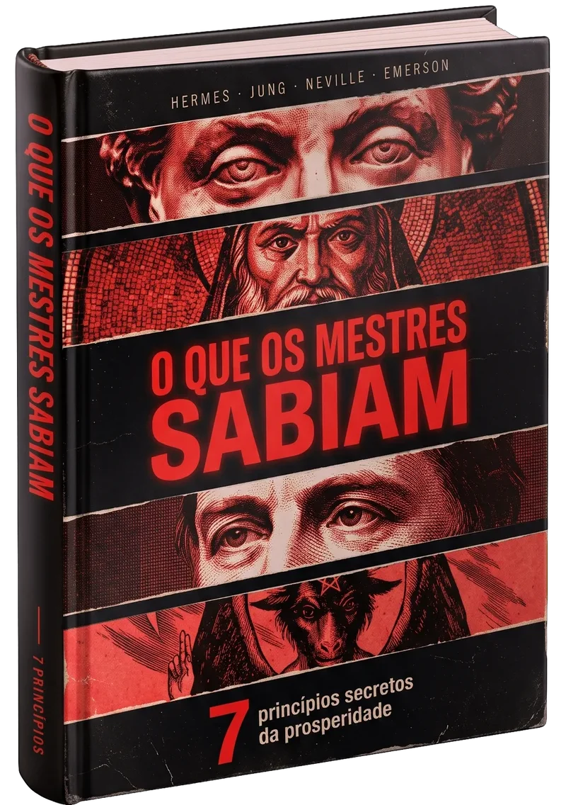
Os 7 princípios: Mentalismo, Correspondência, Vibração, Polaridade, Ritmo, Causa e Efeito, Gênero.
“Existe uma ciência de ficar rico, e ela é uma ciência exata, como a álgebra ou a aritmética.”
Eu destrinchei essa ciência em 7 princípios práticos dentro do e‑book.
Experimente
Chegue mais perto.
Nove detalhes tirados do livro. Toque nos números e leia antes de decidir.
Por dentro
Cada princípio, o mesmo caminho.
Cada capítulo se lê em 12 a 15 minutos e se sustenta sozinho, nestes 4 passos:
O princípio Uma cena real de abertura e a ideia explicada sem jargão.
O mestre A vida e a obra de quem ensinou, e onde os outros mestres disseram o mesmo com outras palavras.
O dinheiro Como o princípio aparece na sua vida financeira e o erro mais comum ao aplicá-lo.
A prática Sete dias, até 20 minutos por dia e uma ação concreta no mundo.
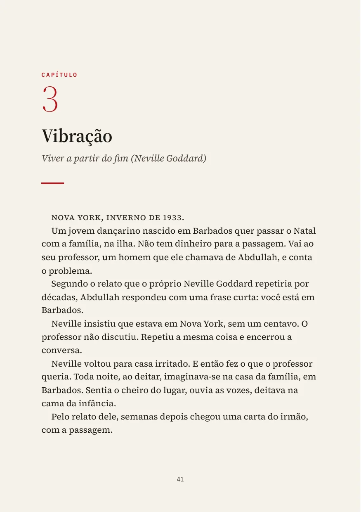
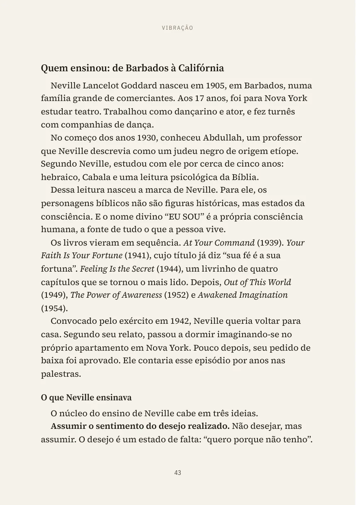
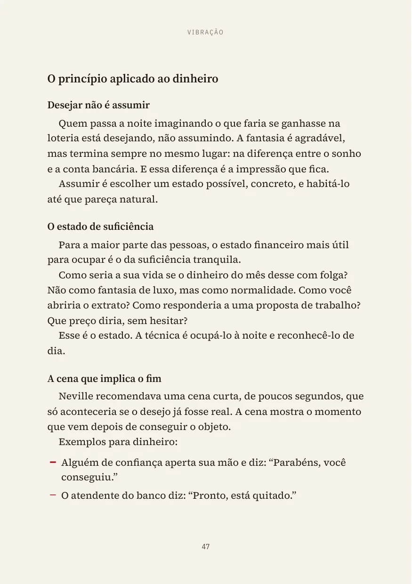
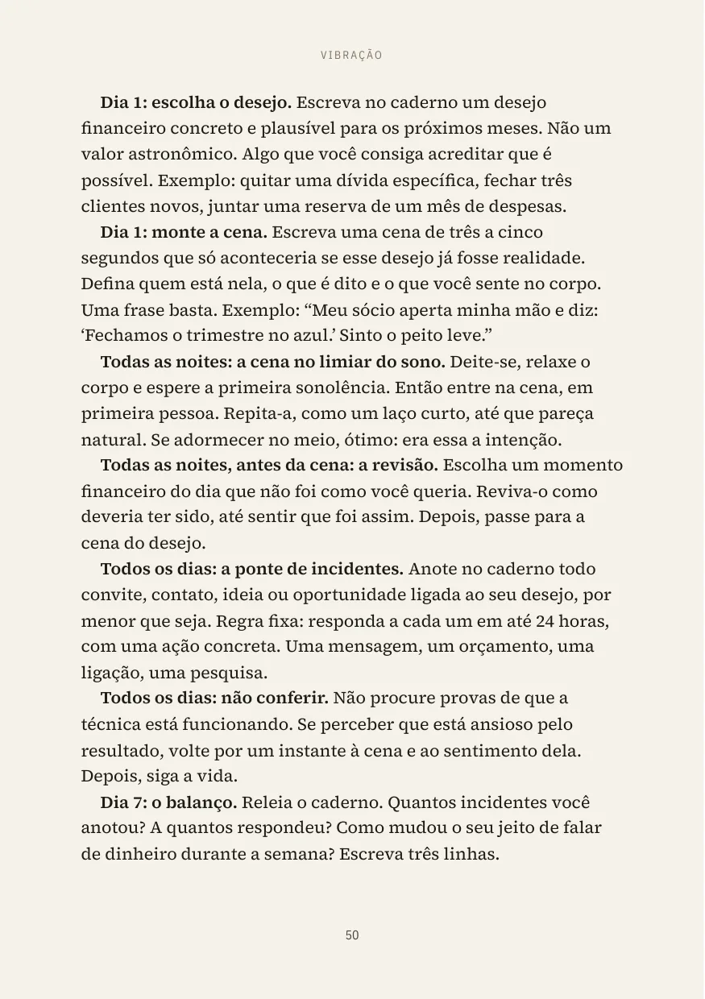
Trechos do livro · Capítulo 3, Neville Goddard
Sumário
A fórmula dos mestres.
Um princípio e um mestre por capítulo. Veio de um vídeo sobre um deles? O capítulo dele se lê sozinho.
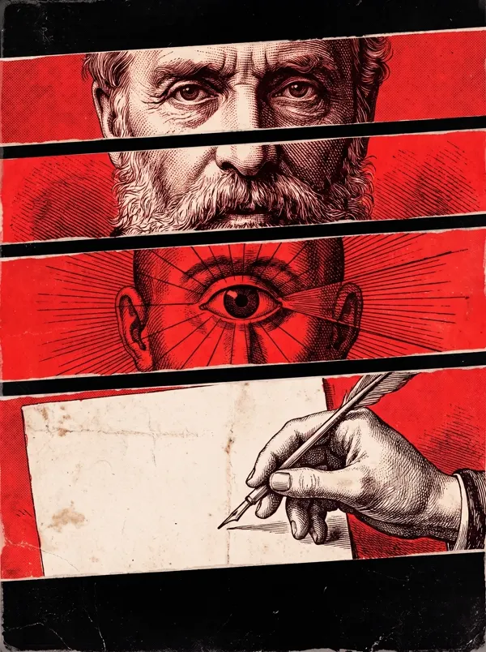
01Mentalismo
A mente que não discute
Thomas Troward
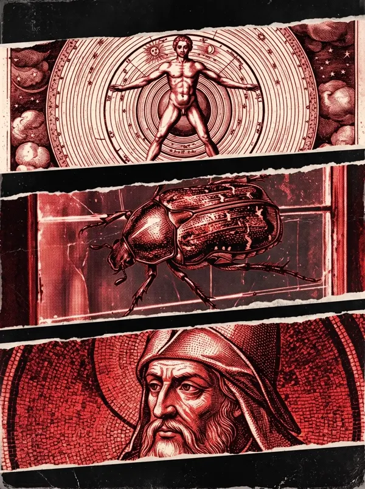
02Correspondência
O que está embaixo é como o que está em cima
Hermes Trismegisto e Carl Jung
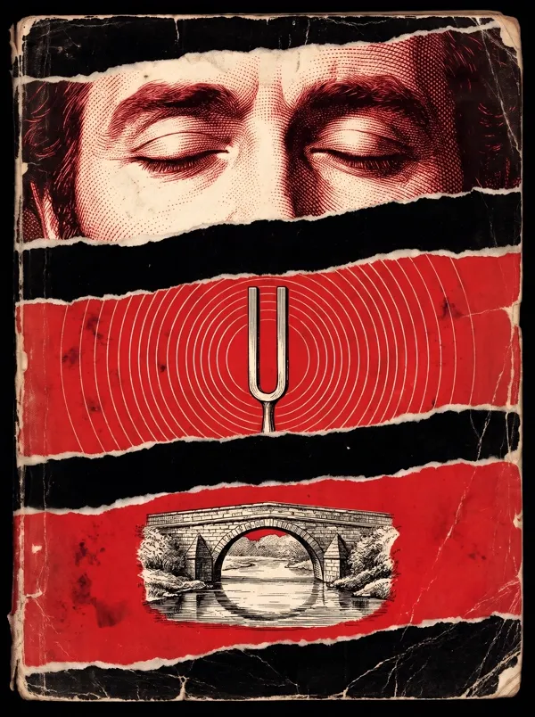
03Vibração
Viver a partir do fim
Neville Goddard
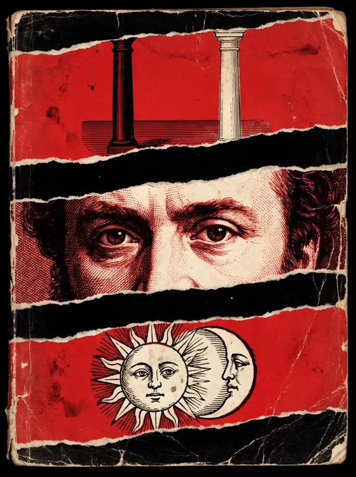
04Polaridade
O ouro escondido na sombra
Éliphas Lévi e Carl Jung
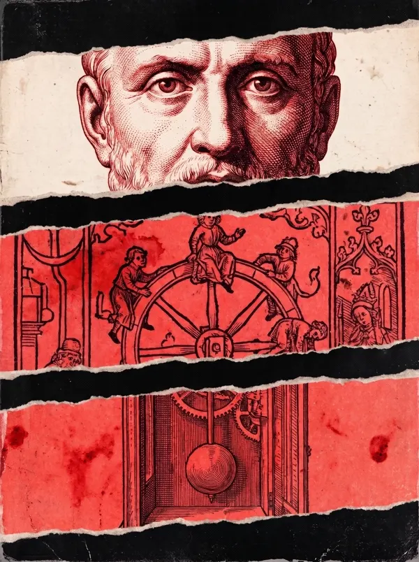
05Ritmo
A riqueza como serva
Epicteto, Sêneca e Marco Aurélio
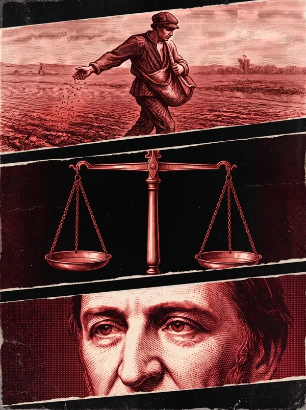
06Causa e Efeito
Os dados de Deus estão sempre viciados
Ralph Waldo Emerson
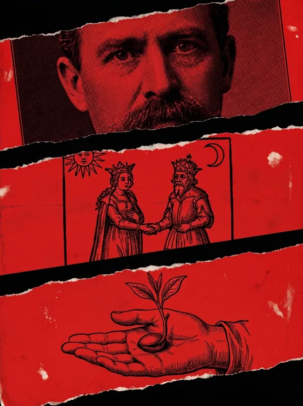
07Gênero
A imagem e a mão
Wallace Wattles
E no fim
O Ritual das 7 Semanas
As 7 práticas encadeadas numa rotina de oito semanas, e a Biblioteca dos Mestres com onde ler cada original.
Os 7 princípios, o Ritual das 7 Semanas e a Biblioteca dos Mestres por R$ 27,90.
Quero os 7 princípios secretosDúvidas
Antes de comprar.
Preciso entender de hermetismo?
Não. Cada princípio é explicado do zero, junto com a vida e a obra do mestre que o ensinou. Quem já leu os originais encontra as ligações entre eles.
Como recebo e onde leio?
O acesso ao PDF chega no e-mail da compra assim que o pagamento é confirmado. O formato A5 cabe bem no celular, no tablet e no computador.
As informações são confiáveis?
Sim. Entre aspas estão só palavras dos próprios mestres; quando a redação exata é incerta, o livro parafraseia e indica a obra. Ele também conta o que costuma ficar escondido, como o fato de O Caibalion ser de 1908, e o apêndice mostra onde ler cada original.
É mais um livro de lei da atração?
Não do jeito comum. Ele parte das obras originais de mestres de tradições diferentes, mostra onde eles concordam e onde discordam, e toda prática termina numa ação concreta no mundo. Nada de imaginar e esperar.
E se eu não gostar?
Você tem 7 dias de garantia. Se o livro não fizer sentido para você, pede o reembolso pela plataforma da compra e recebe o valor de volta, sem precisar explicar o motivo.
Quanto tempo leva para ler?
Cada capítulo se lê em 12 a 15 minutos, então dá para ler tudo num fim de semana. As práticas foram pensadas para oito semanas, com até 20 minutos por dia.
Preciso comprar os livros dos mestres?
Não. O livro explica tudo o que usa. Se quiser ir além, o apêndice indica onde ler cada original, com edições em português e fontes gratuitas.
Depois deste livro, você não pensa em dinheiro do mesmo jeito.
Sem o mapa, cada mestre continua sendo lido sozinho, e o fio que liga todos eles passa despercebido.
O que vem no livro
- A fórmula dos 7 princípiosum por capítulo, com o mestre que o ensinou
- 7 práticas da semanaaté 20 minutos por dia e uma ação no mundo
- O Ritual das 7 Semanasas práticas encadeadas numa rotina de oito semanas
- A Biblioteca dos Mestresonde ler cada original, com edições em português
- 42 detalhes pouco conhecidosobras, datas e técnicas que quase ninguém conta
E-book em PDF · pagamento único
De R$ 47,90
42% OFF
R$27,90
à vista ou 12x de R$ 5,24 · acesso imediato
Menos de R$ 4 por princípio.
Quero aprender a fórmulaGarantia de 7 dias. Leia o livro inteiro. Se não fizer sentido para você, peça o reembolso e o valor volta, sem precisar explicar o motivo.